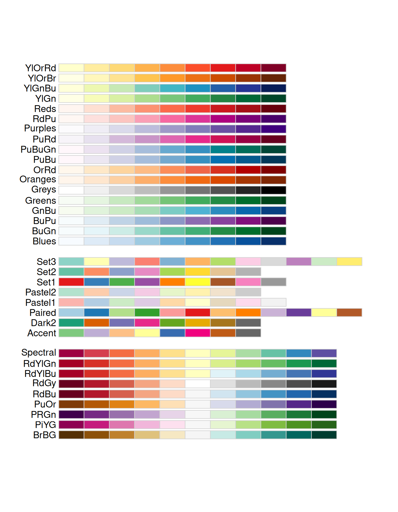

library(RColorBrewer)
display.brewer.all()

RColorBrewer.
En este primer tema se introducen muchos de los conceptos básicos y elementos constructivos que debemos emplear cuando diseñamos e implementamos una visualización de datos. La referencia básica que vamos a seguir en esta exposición es Munzner (2015).
Nunca se podrá insistir lo suficiente en la extrema importancia que la visualización de datos tiene dentro del proceso de preparación y análisis de datos. Un ejemplo sencillo pero muy convincente es el llamado Cuarteto de Anscombe, introducido por dicho autor hace ya más de 50 años (Anscombe, 1973). Se trata de 4 datasets que tienen identicas propiedas estadística de resumen básico de datos: media, varianza, correlación y recta de regresión simple ajustada por el método de mínimos cuadrados. Sin embargo, una inspección gráfica revela rápidamente estructuras claramente diferentes en cada conjunto de datos, tal y como podemos ver en la Figura 1.1.
En consecuencia, queda demostrado que es imprescindible representar gráficamente nuestros datos si queremos evitar sorpresas durante el proceso de preparación y análisis.
A poco que repasemos algunos sitios web, libros de referencia, artículos y tutoriales sobre visualización de datos, rápidamente nos daremos cuenta de la ingente cantidad de material y el vasto catálogo de opciones, elementos de diseño y oportunidades de personalización que se abren ante nosotros. En esta situación, resulta complicado decidir qué diseño o qué combinación de elementos son los más adecuados para nuestro caso particular. Para guiarnos en esta tarea, Munzner (2015) propone un método sencillo que se basa en tres preguntas clave:
What?: Identificar qué datos queremos representar, cuál es su naturaleza o modalidad (cuantitativos, cualitativos, ordenados/ranking, grafo, serie temporal, datos espaciales, etc.). Dependiendo de la modalidad de los datos, su tamaño y otras propiedades relevantes podremos considerar o descartar unos elementos o diseños de visualización u otros.
Why?: Reflexionar sobre el propósito de nuestro gráfico, qué queremos mostrar o resaltar y cómo queremos dirigir la atención del espectador hacia los aspectos más importantes del mismo.
How?: Una vez que hemos filtrado los posibles elementos y diseños compatibles con nuestros datos, pensamos en cuáles de ellos ofrecen la combinación más adecuada para conseguir el propósito inicial que hemos establecido.
Si seguimos este método de toma de decisiones conseguiremos que nuestros gráficos sean más informativos, más sencillos de interpretar y capten mejor la atención de la audiencia.
Los datos que son objetos de análisis están caracterizados por un cierto tipo (a veces también nos referimos a su modalidad) y una semántica. El tipo nos indica su estructura o su interpretación matemática, mientras que la semántica de los datos es su significado en el mundo real.
El tipo de los datos está directamente relacionado con el formato de representación que utilizamos para almacenar su valor. Por ejemplo, datos de tipo numérico se pueden almacenar como números enteros, en coma flotante, números de doble precisión, etc. Los datos categóricos tienen valores que corresponden a etiquetas o identificadores de cada categoría o grupo.
Debemos tener cuidado con interpretaciones equívocas del tipo y formato de los datos al representarlos gráficamente. Por ejemplo, si una variable representa el código postal, sus valores serán números pero su tipo de datos debería ser categórico (factor, en R), no una cantidad (no es una variable cuantitativa).
La Figura 1.2 muestra cinco tipos de datos básicos:
Un ítem es una entidad individual discreta, una unidad de nuestro análisis, como por ejemplo una fila en una tabla (con tidy data) o un nodo de un grafo.
Un atributo es una propiedad o característica específica que se puede medir, observar o registrar. También se usan los nombres variable, dimensión, feature o campo.
Un enlace (link en inglés) es una relación o conexión explícita entre dos ítems, típicamente cuando estamos representando un grafo.
Una malla (grid) representa una estrategia para muestrear datos teniendo en cuenta las relaciones geométricas y topológicas entre las celdas.
Finalmente, la posición o ubicación en datos espaciales nos proporciona coordenadas en un espacio de representación 2D o 3D en el espacio como, por ejemplo, un par (latitud, longitud).
Debemos remarcar que, en ocasiones, algunos atributos tienen significados especiales, como es el caso ya mencionado de la ubicación. Por ejemplo, en datos que representan series temporales uno de los atributos de nuestros ítems será una marca de tiempo (fecha, hora o ambas) que caracteriza a dicho ìtem. A la hora de representar estos datos tenemos que tener en cuenta la dependencia estricta que tienen respecto a ese atributo. De lo contrario, estaríamos rompiendo la estructura de los datos y degradando su calidad.
Si un dataset contiene valores tomados en diferentes instantes de tiempo, es necesario tener en cuenta ese atributo al representarlos gráficamente y analizarlos. Los valores de datos tomados en instantes de tiempo cercanos entre sí tienden a ser más parecidos entre ellos (alta correlación) que los datos tomados en instantes de tiempo más alejados (baja correlación).
En general, podemos hablar del concepto de datos con dependencias estrictas para reflejar el hecho de que uno o más atributos (marca de tiempo, ubicación o ambos simultáneamente) determinan fuertemente la estructura interna de ese dataset y la organización de sus valores.
La forma en la que organizamos los datos para su almacenamiento y procesamiento determina el tipo de dataset con el que vamos a trabajar. La Figura 1.3 representa los cuatro tipos básicos de datasets, junto con algunos tipos adicionales.
Tablas: Los datos se pueden representar como filas y columnas de una tabla, donde cada fila representa un ítem y cada columna representa un atributo o feature (concepto tidy data (Wickham, 2014)). Estas tablas se suelen representar en memoria mediante un objeto Data Frame.
Una red o grafo es un dataset orientado a consignar y representar las relaciones entre dos o más ítems. En este caso el enlace representa una relación entre dos ítems. A veces, los enlaces pueden tener también atributos que los describan (por ejemplo, un grado de importancia, tipo de relación, etc.). Los árboles son grafos jerárquicos que no tienen ciclos y representan relaciones multinivel entre los ítems.
Un cuerpo (en inglés field, a veces traducido como campo) es un dataset que contiene valores de atributos asociados con celdas o regiones. Cada celda contiene valores medidos o calculados a partir de un dominio continuo. Un ejemplo sería la división de una imagen satelital mediante una malla de celdas hexagonales, para después medir y asignar un valor promedio del Índice de Vegetación de Diferencia Normalizada (NDVI) o del Índice de Humedad de diferencia normalizada (NDWI) en esa celda. La malla que empleamos para subdividir el dominio continuo en celdas discretas puede ser también rectilínea o seguir otro tipo de geometría. También puede ser uniforme (división a intervalos regulares) o no uniforme.
Una geometría es un dataset específico que contiene información para respresentar formas de ítems en ubicaciones espaciales específicas. Es un tipo de dataset intrínsecamente relacionado con las representaciones de datos espaciales, como por ejemplo los polígonos que delimitan las fronteras de municipios, provincias o países en un mapa político.
Otros tipos específicos de datasets incluyen los conjuntos (sets), que son grupos no ordenados de ítems (usualmente sin posibilidad de que se repitan); las listas (conjuntos ordenados de ítems); y los clusters, que agrupan los elementos de acuerdo con el grado de similaridad entre ellos.
En este taller, la mayoría de gráficos que vamos a construir son estáticos, es decir, la representación visual de los datos permanece fija e inalterada. Sin embargo, en ciertas situaciones puede ser beneficioso construir representaciones dinámicas de nuestros datos, como representa la Figura 1.4. Un ejemplo suelen ser los gráficos de evolución en los que representamos más de un atributo simultáneamente, como los que podemos representar con el paquete gganimate en R.
A su vez, los gráficos dinámicos pueden ser también interactivos, es decir, además de añadir dinamismo pueden permitir al espectador interactuar con el gráfico para explorar aspectos concretos de los datos. Un ejemplo muy claro de este tipo de gráficos interactivos son los paneles de seguimiento o dashboards que podemos construir con la herramienta Shiny, tal y como se muestra en la Figura 1.5.
La Figura 1.6 muestra diferentes tipos de atributos que caracterizan los ìtems de un dataset.
Un atributo categórico consta de un conjunto de etiquetas de identificación, que no tienen ningún tipo de ordenación interna. Un ejemplo serían nombres de países o regiones, colores, etc.
Un atributo ordenado contiene valores que están ordenados entre sí, es decir, se pueden aplicar operaciones de comparación lógica entre dichos valores. Un ejemplo sería los tamaños de una camiseta (S, M, L, XL, etc.), los resultados de valoración (, , , etc. ). Un caso particular son las variables cuantitativas, en las que los valores se referencian respecto a un mismo origen.
Según la dirección de su ordenación, podemos encontrar atributos secuenciales, divergentes o cíclicos.
Unos de los principios fundamentales para la construcción de gráficos efectivos para visualización de datos es ser conscientes de la elección de las marcas o símbolos que empleamos para representar la información así como los canales de percepción de los espectadores que pretendemos emplear. La Figura 1.7 muestra un resumen de las principales marcas y canales como elementos constructivos que podemos emplear para diseñar nuestros gráficos (Munzner, 2015).
Debemos prestar atención a la clasificación que muestra la Figura 1.7, puesto que no todas las marcas ni todos los canales tienen la misma efectividad al representar la información para que el espectador la reciba e interprete. Por ejemplo, a pesar de que se usa con mucha frecuencia el canal de luminancia o saturación de la paleta de colores es mucho menos efectivo para codificar la información y que el espectador la inteprete que la longitud o el área 2D. A su vez, la representación de datos en volúmenes 3D debe ser un recurso que no se utilice a la ligera y su empleo debe estar muy bien justificado puesto que, en general, es un canal de información mucho más difícil de intepretar (sobre todo para ciertas tareas, como comparaciones).
Existen multitud paletas de colores que podemos usar en R para la representación gráfica de nuestros datos. Tanta variedad puede, ciertamente, abrumar al usuario poco experimentado, que no sabe bien qué opción es la mejor para determinada aplicación. Por si eso no fuera suficiente, es posible personalizar cualquier paleta o construir nuestra propia paleta de colores para una visualización.
Sin embargo, se pueden encontrar algunas recomendaciones interesantes que nos pueden servir de guía:
El principal consejo es no escoger a mano colores individuales que no estén agrupados ya en una paleta. La construcción de las paletas de colores que ofrecen varios paquetes de R e incluso R base ya ha tenido en cuenta, en su diseño, factores sobre teoría de color, interpretación y otros usos específicos.
Dedica un poco de tiempo a revisar la documentación de alguno de estos paquetes para buscar paletas que estén diseñadas para tu caso particular. Por ejemplo, si quieres representar información de la orografía de un terreno (curvas de nivel), temperatura de ciertas áreas o valores que describen campos en un mapa geopolítico, es casi seguro que uno de estos paquetes ofrece soluciones adaptadas a cada caso particular.
El número máximo de colores que incluye cada paleta oscila entre 7 y 10. En muy raras ocasiones se pueden encontrar paletas de más de 10 colores y por una buena razón. Un excesivo número de colores generará confusión en nuestro gráfico, ya que nuestro cerebro tendrá más problemas para identificar cada color individual.
Recuerda pensar en el propósito del gráfico que quieres construir y elige una paleta que se adecúe a ese objetivo. Hay paletas con gradaciones de saturación o luminancia del mismo color para indicar subidas o bajadas graduales de atributos con valores cuatitativos, mientras que otras paletas combinan colores que se distingan perfectamente los unos de los otros para identificar cada caso (por ejemplo, el gráficos con múltiples líneas que representan la evolución de varias variables). La Figura 1.8 muestra un ejemplo de los dos tipos de paletas mencionados para el caso del paquete RColorBrewer.
library(RColorBrewer)
display.brewer.all()RColorBrewer.
Algunos de los paquetes R más conocidos que ofrecen paletas de colores para representación gráfica de datos son:
El paquete viridis y su versión reducida viridisLite (enlazado por defecto en el conocido paquete ggplot2) presenta paletas de colores diseñadas para mejorar su legibilidad en espectadores con formas habituales de ceguera a algún color u otros tipos de deficiencias visuales. Los mapas de color que ofrecen tienen una escala de percepción uniforme y todos ellos son directamente convertibles a formato B/N para impresión en escala de grises.
El paquete colorspace proporciona paletas específicamente diseñadas dependiendo del tipo de atributo que queremos representar, incluyendo valores categóricos, secuenciales, divergentes, etc. La Figura 1.9 muestra un ejemplo de paletas diseñadas en base a los valores de tonalidad, crominancia y luminancia para varios tipos de atributos.
library(colorspace)
hcl_palettes(plot = TRUE)colorspace para diferentes tipos de atributos.
Además, este paquete incluye funciones muy potentes para evaluar la paleta de colores escogida, mostrando gráficos que describen sus características más destacadas para ponderar si la elección es adecuada para nuestros intereses.
q4 <- qualitative_hcl(4, palette = "Dark 3")
demoplot(q4, "bar")
hclplot(q4)
specplot(q4, type = "o")colorspace.
RColorBrewer, utilizado con frecuencia en cartografía puesto que ofrece una herramienta interactiva de selección de paletas en función de los objetivos de nuestro mapa.